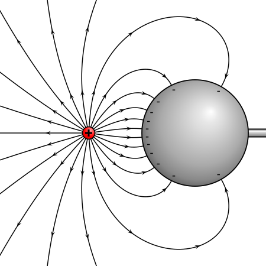
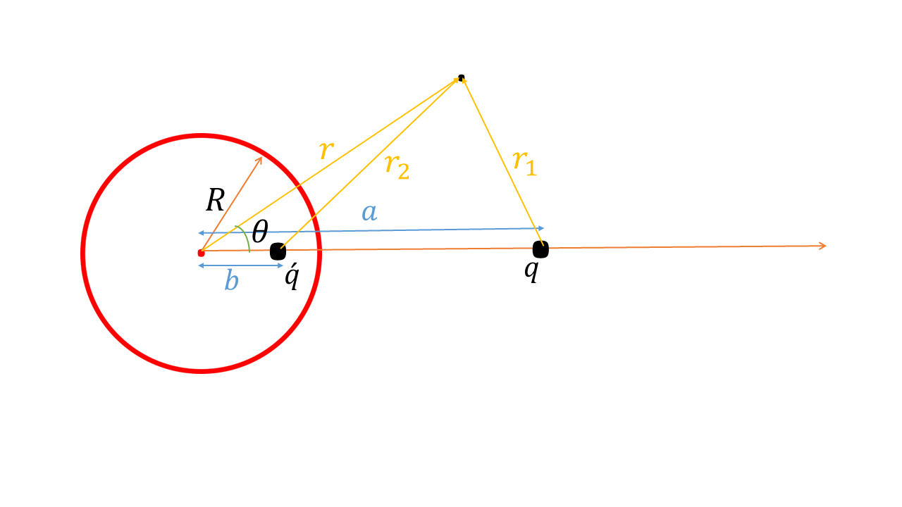

this problem we have an spherical conductor next to a charge and we are going to find the potential and electric feild everywhere in space and then the charge density on the conductors surface.
now we parametrize the problem as follows. the q prime is image charge and as you know we are going to use image charge method which is a really nice method in electrostatics.
It follows from writing coloumbs law for two points at the end of spheres diameter that we have:
$$\frac{kq\prime}{4\pi \varepsilon_0 (R-b)}+\frac{kq}{4\pi\varepsilon_0 (a-R)}=0,\quad \frac{kq\prime}{4\pi \varepsilon_0 (R+b)}+\frac{kq}{4\pi\varepsilon_0 (a+R)}=0$$by solving these two equations we can find that:
$$q\prime=-q\frac{R}{a}, \quad b=\frac{R^2}{a}$$now by noticing the yellow position vectors on the second image we can find that:(using law of cosines)
$$\varphi(r,\theta)=\frac{kq}{r_1}+\frac{kq\prime}{r_2}=\frac{kq}{\sqrt{r^2+a^2-2ra\cos(\theta)}}+\frac{kq\prime}{\sqrt{r^2+b^2-2rb\cos(\theta)}}=\frac{kq}{\sqrt{r^2+a^2-2ra\cos(\theta)}}+\frac{kq\prime}{\sqrt{r^2+b^2-2rb\cos(\theta)}} $$